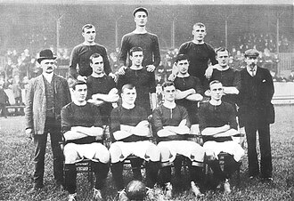

Sejarah Manchester United
Manchester United Football Club ialah sebuah klub sepak bola professional asal Inggris yang tergabung pada Liga Premier Inggris atau Liga Utama Inggris yang berdiri pada tahun 1878. Pada debut pertamanya pada tahun 1878, klub ini semula bernama Newton Heath Lancashire and Yorkshire Railwaiy F.C yang diambil dari sang pelopor Lancashire dan Yorkshire yang seringkali melakukan latihan di stasiun kereta api di bilangan Newton Heath. Namun, di tahun 1902 dan bertepatan dengan keadaan klub yang kian hari dilanda utang yang membuatnya hampir bangkrut, klub tersebut melakukan pencarian investor guna keberlangsungan agar klub tersebut tetap ada. Lalu, terbesit nama J.H. Davies yang menjadi investor pada klub itu dan langsung menjadi ketua atas klub tersebut. Tak berselang lama, diadakanlah rapat untuk mengganti nama klub.
Mulanya, terdapat beberapa kandidat nama klub tersebut. Mulai dari Manchester Central, Manchester Celtic, dan Manchester United. Terpilihlah nama Manchester United tepat pada 26 April 1902. Seiring berjalannya waktu, Manchester United memiliki nama julukan lain yang mulai eksis dikenal oleh publik yaitu The Red Devils yang diadaptasi dari warna yang dominan pada logo serta kostum klub yaitu merah. Adapun, markas utama dari Manchester United ini ialah Old Trafford yang terletak di Manchester Raya, Inggris. Manchester United pun terbilang pernah mengalami masa kejayaannya dan diisi oleh berbagai macam pemain mega bintang seperti David Beckham, Ryan Giggs, Paul Scholes, Bobby Charlton, hingga Eric Cantona. Hingga saat ini, nama Manchester United Football Club terus berkibar dengan dukungan seluruh fansnya yang tersebar di seluruh dunia dengan memperoleh 42 trofi.
Manchester United telah memenangkan banyak trofi di sepak bola Inggris, termasuk 20 gelar Liga—terbanyak dalam sejarah, 12 gelar Piala FA, 6 gelar Piala Liga dan 21 gelar Community Shield FA—juga terbanyak dalam sejarah. Klub ini juga telah memenangkan tiga gelar Piala/Liga Champions, satu Liga Eropa UEFA, satu Piala Winners UEFA, satu Piala Super UEFA, satu Piala Interkontinental, dan satu Piala Dunia Antarklub FIFA—klub Inggris pertama yang menjuarai ajang ini. Pada musim 1998–1999, klub ini memenangkan treble (trigelar) dari Liga Utama, Piala FA, dan Liga Champions; prestasi ini belum pernah terjadi sebelumnya untuk klub Inggris. Manchester United juga merupakan salah satu klub tersukses sepanjang masa di Inggris.